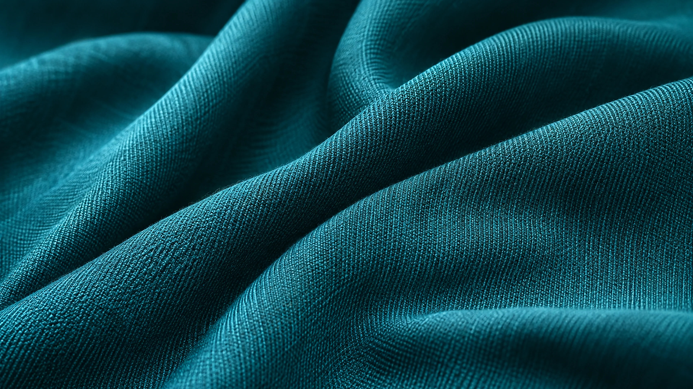

01 / PRODUCT CATEGORY
Knitted Clothing
Manufacturing of knitted apparel, supported by the textile processes described in our company profile.
Enquire about knitted apparel ↗Garment manufacturing with an integrated foundation and room to create.
Our company profile identifies knitted clothing and basic woven apparel as core production categories.
Manufacturing of knitted apparel, supported by the textile processes described in our company profile.
Enquire about knitted apparel ↗
Apparel production for basic woven garments, supported by sampling, cutting, stitching and finishing.
Enquire about woven apparel ↗Share your garment specifications, expected quantities and timeline. Our team can discuss available production options.
Send an enquiry